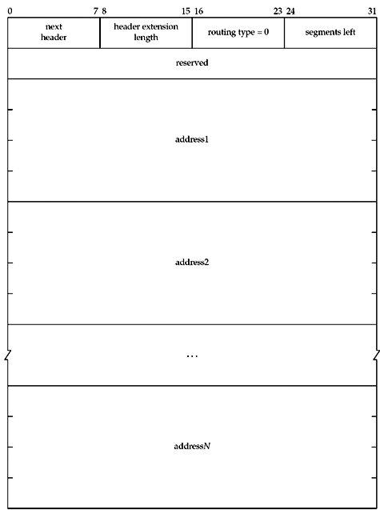
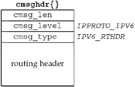

| [ Team LiB ] |
|
27.6 IPv6 Routing HeaderThe IPv6 routing header is used for source routing in IPv6. The first two bytes of the routing header are the same as we showed in Figure 27.7: a next header field followed by a header extension length. The next two bytes specify the routing type and the number of segments left (i.e., how many listed nodes are still to be visited). Only one type of routing header is specified, type 0, and we show its format in Figure 27.11. Figure 27.11. IPv6 routing header. An unlimited number of addresses can appear in the routing header (limited only by packet length) and segments left must be equal to or less than the number of addresses in the header. RFC 2460 [Deering and Hinden 1998] specifies the details of how the header is processed as the packet travels to the final destination, along with a detailed example. The routing header is normally specified as ancillary data with sendmsg and returned as ancillary data by recvmsg. Nothing special needs to be done by the application to send the header: just specify it as ancillary data in a call to sendmsg. To receive the routing header, the IPV6_RECVRTHDR socket option must be enabled, as in const int on = 1; setsockopt(sockfd, IPPROTO_IPV6, IPV6_RECVRTHDR, &on, sizeof(on)); Figure 27.12 shows the format of the ancillary data object used to send and receive the routing header. Six functions are defined to create and process the routing header. The following three functions build an option to send: Figure 27.12. Ancillary data object for IPv6 routing header.
inet6_rth_space returns the number of bytes required to hold a routing header of the specified type (normally specified as IPV6_RTHDR_TYPE_0) with the specified number of segments. inet6_rth_init initializes the buffer pointed to by rthbuf to contain a routing header of the specified type and the specified number of segments. The return value is the pointer to the buffer, and this pointer is then used as an argument to the next function. inet6_rth_init returns NULL if an error occurs, for instance, when the supplied buffer is not large enough. inet6_rth_add adds the IPv6 address pointed to by addr to the end of the routing header being constructed. When successful, the segleft member of the routing header is updated to account for the new address. The following three functions deal with a received routing header:
inet6_rth_reverse takes a routing header that was received (pointed to by in) and creates a new routing header (in the buffer pointed to by out) that sends datagrams along the reverse of that path. The reversal can occur in place; that is, the in and out pointers can point to the same buffer. inet6_rth_segments returns the number of segments in the routing header described by rthbuf. When successful, the return value is greater than zero. inet6_rth_getaddr returns a pointer to the IPv6 address specified by index in the routing header described by rthbuf. index must have a value between zero and one less than the value returned by inet6_rth_segments, inclusive. To demonstrate these options, we create a UDP client and server. The client, shown in Figure 27.13, accepts a source route on the command line like the IPv4 TCP client we showed in Figure 27.6; the server prints the received source route and reverses it to send back to the client. Create source route11–21 If more than one argument was supplied, all but the final argument form the source route. We first determine how much space the route header will require with inet6_rth_space, then allocate the necessary space with malloc. We initialize the allocated buffer with inet6_rth_init. Then, for each address in the source route, we convert it to numeric form using host_serv and add it to the source route using inet6_rth_add. This is very similar to our IPv4 TCP client, except that instead of our own helper functions, these library functions are provided by the system. Look up destination and create socket22–23 We use host_serv to look up the destination, and create a socket to use. Set sticky IPV6_RTHDR option and call worker function24–27 As we will see in Section 27.7, instead of sending the same ancillary data with every packet, we can use setsockopt to apply the routing header to every packet in the session. We only set this option if ptr is non-NULL, meaning that we allocated a route header earlier. Finally, we call the worker function, dg_cli, which we defined in Figure 8.8. Figure 27.13 IPv6 UDP client with source route.ipopts/udpcli01.c
1 #include "unp.h"
2 int
3 main(int argc, char **argv)
4 {
5 int c, sockfd, len = 0;
6 u_char *ptr = NULL;
7 void *rth;
8 struct addrinfo *ai;
9 if (argc < 2)
10 err_quit("usage: udpcli01 [ <hostname> ... ] <hostname>");
11 if (argc > 2) {
12 int i;
13 len = Inet6_rth_space(IPV6_RTHDR_TYPE_0, argc - 2);
14 ptr = Malloc(len);
15 Inet6_rth_init(ptr, len, IPV6_RTHDR_TYPE_0, argc - 2);
16 for (i = 1; i < argc - 1; i++) {
17 ai = Host_serv(argv[i], NULL, AF_INET6, 0);
18 Inet6_rth_add(ptr,
19 &((struct sockaddr_in6 *) ai->ai_addr)->sin6_addr);
20 }
21 }
22 ai = Host_serv(argv[argc - 1], SERV_PORT_STR, AF_INET6, SOCK_DGRAM);
23 sockfd = Socket(ai->ai_family, ai->ai_socktype, ai->ai_protocol);
24 if (ptr) {
25 Setsockopt (sockfd, IPPROTO_IPV6, IPV6_RTHDR, ptr, len);
26 free (ptr);
27 }
28 dg_cli (stdin, sockfd, ai->ai_addr, ai->ai_addrlen); /* do it all */
29 exit (0);
30 }
Our server is the same simple UDP server as before: open a socket and call dg_echo. The setup is trivial, so we do not show it. Instead, Figure 27.14 shows our dg_echo function, which prints the source route if one was received and reverses it for use in returning the packet. Turn on IPV6_RECVRTHDR option and set up msghdr struct12–13 To receive the incoming source route, we must set the IPV6_RECVRTHDR socket option. We must also use recvmsg, so we set up the unchanging fields of a msghdr structure. Set up modifiable fields and call recvmsg21–24 We set the length fields to the appropriate sizes and call recvmsg. Figure 27.14 dg_echo function that prints and reverses IPv6 source route.ipopts/dgechoprintroute.c
1 #include "unp.h"
2 void
3 dg_echo(int sockfd, SA *pcliaddr, socklen_t clilen)
4 {
5 int n;
6 char mesg[MAXLINE];
7 int on;
8 char control[MAXLINE];
9 struct msghdr msg;
10 struct cmsghdr *cmsg;
11 struct iovec iov[1];
12 on = 1;
13 Setsockopt (sockfd, IPPROTO_IPV6, IPV6_RECVRTHDR, &on, sizeof(on));
14 bzero (&msg, sizeof(msg));
15 iov[0].iov_base = mesg;
16 msg.msg_name = pcliaddr;
17 msg.msg_iov = iov;
18 msg.msg_iovlen = 1;
19 msg.msg_control = control;
20 for ( ; ; ) {
21 msg.msg_namelen = clilen;
22 msg.msg_controllen = sizeof(control);
23 iov[0].iov_len = MAXLINE;
24 n = Recvmsg (sockfd, &msg, 0);
25 for (cmsg = CMSG_FIRSTHDR(&msg); cmsg != NULL;
26 cmsg = CMSG_NXTHDR (&msg, cmsg)) {
27 if (cmsg->cmsg_level == IPPROTO_IPV6 &&
28 cmsg->cmsg_type == IPV6_RTHDR) {
29 inet6_srcrt_print(CMSG_DATA(cmsg));
30 Inet6_rth_reverse(CMSG_DATA(cmsg), CMSG_DATA(cmsg));
31 }
32 }
33 iov[0].iov_len = n;
34 Sendmsg(sockfd, &msg, 0);
35 }
36 }
Find and process route header25–32 We loop through the ancillary data using CMSG_FIRSTHDR and CMSG_NXTHDR. Even though we are only expecting one piece of ancillary data, it is good practice to loop like this. If we do find a routing header, we print it with our inet6_srcrt_print function (Figure 27.15). We then reverse the route with inet6_rth_reverse so that we can use it to return the packet along the same path. In this case, inet6_rth_reverse works on the route in place, so that we can use the same ancillary data to send the return packet. Echo packet33–34 We set the length of the data to send, and use sendmsg to return the packet. Figure 27.15 inet6_srcrt_print function: prints a received IPv6 source route.ipopts/sourceroute6.c
1 #include "unp.h"
2 void
3 inet6_srcrt_print(void *ptr)
4 {
5 int i, segments;
6 char str[INET6_ADDRSTRLEN];
7 segments = Inet6_rth_segments(ptr);
8 printf("received source route: ");
9 for (i = 0; i < segments; i++)
10 printf ("%s ", Inet_ntop(AF_INET6, Inet6_rth_getaddr(ptr, i),
11 str, sizeof(str)));
12 printf("\n");
13 }
Our inet6_srcrt_print is almost trivial, thanks to the IPv6 route helper functions. Determine number of segments in route7 We first use inet6_rth_segments to determine the number of segments present in the route. Loop through each segment9–11 We loop through all the segments, calling inet6_rth_getaddr for each one and converting the address to presentation form using inet_ntop. Our client and server that handle IPv6 source routes do not need to know how the source route is formatted in the packet. The library functions the API provides hide the details of the packet format from us, yet give us all the flexibility we had when we built the option from scratch in IPv4. |
| [ Team LiB ] |
|